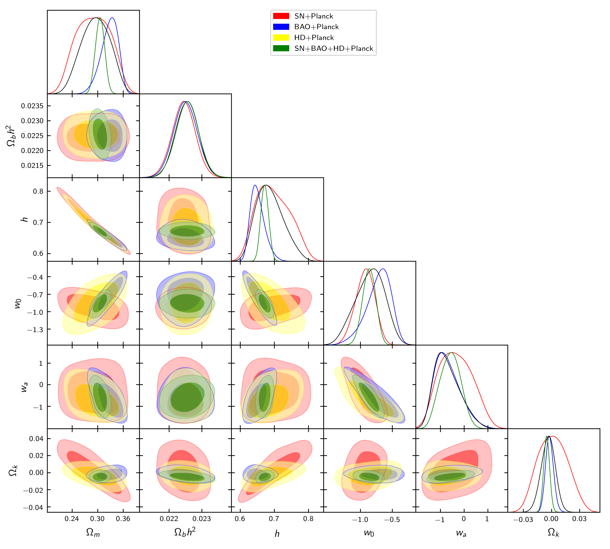

Data¶
Previously, in Quick start and Customize ini file, we display all the options to datasets. Now, we mention in what consit all of them. The data avaiable in SimpleMC is the following table.
| Dataset key | Type of observation | Description |
|---|---|---|
| HD | cosmic chronometers | 31 galaxies from https://arxiv.org/abs/1601.01701. |
| BBAO | BAO | DR11LOWZ, DR11CMASS, DR11LyaAuto, DR11LyaCross, SixdFGS, SDSSMGS |
| GBAO11 | BAO | DR11LOWZ, DR11CMASS, SixdFGS, SDSSMGS |
| CBAO | BAO | DR12Consensus, DR14LyaAuto, DR14LyaCross, SixdFGS, SDSSMGS(), eBOSS() |
| GBAO_no6dF | BAO | DR11LOWZ, DR11CMASS |
| CMASS | BAO | DR11CMASS |
| LBAO | Lymann alpha BAO | DR14LyaAuto, DR14LyaCross |
| LaBAO | BAO | DR14LyaAuto |
| LxBAO | BAO | DR14LyaCross |
| MGS | BAO | SDSSMGS |
| Planck | Planck point | PlanckLikelihood_15 |
| WMAP | Row 2, column 2 | WMAP9Likelihood |
| PlRd | Row 2, column 2 | PlanckLikelihood(kill_Da=True) |
| WRd | Row 2, column 2 | WMAP9Likelihood(kill_Da=True) |
| PlDa | Row 2, column 2 | PlanckLikelihood(kill_rd=True) |
| PlRdx10 | Row 2, column 2 | 100xPlRd |
| CMBW | Row 2, column 2 | WMAP9Likelihood |
| SN | SN-Ia | Binned JLA SN-Ia |
| JLA | Row 2, column 2 | full JLA compilation |
| UnionSN | SN-Ia | Row 2, column 3 |
| Pantheon | SN-Ia | 1048 SN from Pantheon compilation |
| BPantheon | SN-Ia | binned Pantheon, 38 points |
| RiessH0 | cosmic chronometers | Row 2, column 3 |
| 6dFGS | SixdFGS | |
| fs8 | SN-Ia | binned Pantheon, 38 points |
| RC | rotation curves | |
| dline | synthetic points | straight line |
Datasets combinations¶
You can combine any of the datasets, eg. HD+GBAO+LBAO.
Note
For a CPL model with curvature, we can test different combination of datasets avaliables in SimpleMC.
